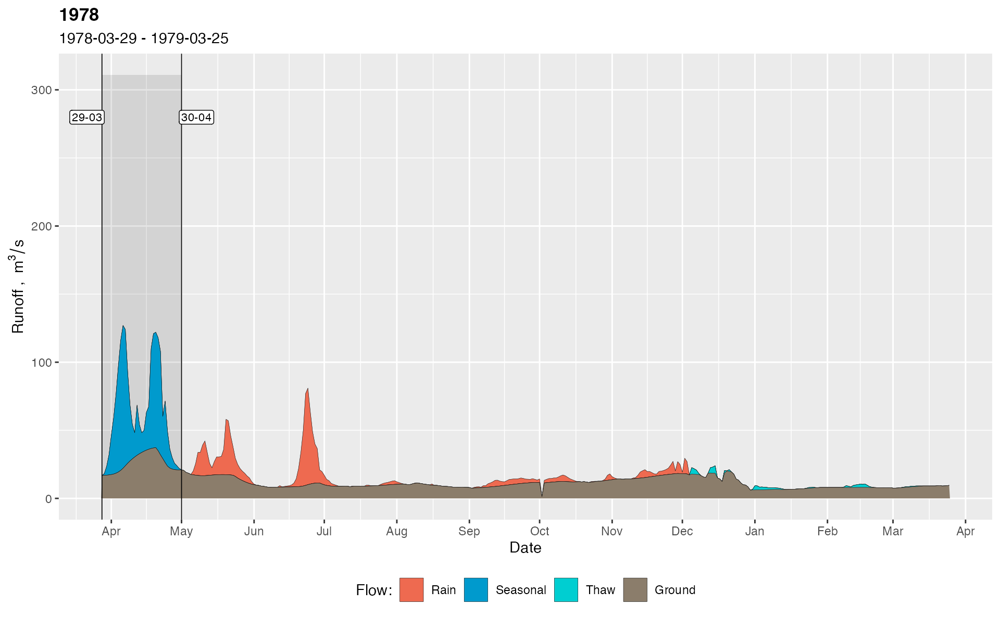

Separates the runoff into genetic components: groundwater, thaw, rain and spring
Usage
gr_separate(df, params = gr_get_params(), debug = FALSE)Arguments
- df
data.framewith four columns: date, runoff, temperature, precipitation.- params
listof separation parameters, as returned bygr_get_params()function.
Value
A data.frame with 11 columns:
| Column | Description |
Date | date |
Q | total runoff |
Qbase | baseflow |
Quick | quickflow |
Qspri | spring flood |
Qrain | rain floods |
Qthaw | thaw floods |
Type | a combination of flow types |
Year | a water-resources year |
Temp | temperature |
Prec | precipitation |
Examples
library(grwat)
data(spas) # example Spas-Zagorye data is included with grwat package
# separate
sep = gr_separate(spas, params = gr_get_params(reg = 'Midplain'))
#> grwat: data frame is correct
#> grwat: parameters list and types are OK
# Visualize
gr_plot_sep(sep, c(1978, 1989))

 # Debug mode gives access to additional information
sep_debug = gr_separate(spas, params = gr_get_params(reg = 'Midplain'), debug = TRUE)
#> grwat: data frame is correct
#> grwat: parameters list and types are OK
#> Warning: grwat: 1974, 1975 years were not separated. Check the input data for possible errors. Use gr_get_gaps() and gr_fill_gaps() functions to detect and fill missing data.
#> Warning: grwat: 1965, 1978, 1989, 1991, 1995, 1996, 1997, 1998, 2002, 2007, 2008, 2009, 2011, 2014, 2015, 2016, 2017, 2019, 2020 years were processed with jittered parameters
# a vector of years with jittered params
jit = attributes(sep_debug)$jittered
jit
#> [1] 1965 1978 1989 1991 1995 1996 1997 1998 2002 2007 2008 2009 2011 2014 2015
#> [16] 2016 2017 2019 2020
# actual params used for each year
parlist = attributes(sep_debug)$params
partab = do.call(dplyr::bind_rows, parlist) # View as table
head(partab)
#> # A tibble: 6 × 39
#> winmon grad1 grad2 gratio ftmon1 ftmon2 ftrisedays1 ftrisedays2 ftdays ftrise
#> <dbl> <dbl> <dbl> <dbl> <dbl> <dbl> <dbl> <dbl> <dbl> <dbl>
#> 1 11 1 1.5 1500 1 5 5 15 25 10
#> 2 11 1 1.5 1500 1 5 5 15 25 10
#> 3 11 1 1.5 1500 1 5 5 15 25 10
#> 4 11 1 1.5 1500 1 5 5 15 25 10
#> 5 11 1 1.5 1500 1 5 5 15 25 10
#> 6 11 1 1.5 1500 1 5 5 15 25 10
#> # … with 29 more variables: ftratio <dbl>, ftrecdays <dbl>, precdays <dbl>,
#> # frostdays <dbl>, windays <dbl>, floodprec <dbl>, floodtemp <dbl>,
#> # frosttemp <dbl>, wintemp <dbl>, signratio1 <dbl>, signratio2 <dbl>,
#> # floodratio <dbl>, gaplen <dbl>, snowtemp <dbl>, gradabs <dbl>,
#> # mntmode <dbl>, mntgrad <dbl>, mntavgdays <dbl>, mntratiodays <dbl>,
#> # mntratio <dbl>, niter <dbl>, a <dbl>, k <dbl>, C <dbl>, aq <dbl>,
#> # padding <dbl>, passes <dbl>, filter <chr>, ftcomp <dbl>
# Debug mode gives access to additional information
sep_debug = gr_separate(spas, params = gr_get_params(reg = 'Midplain'), debug = TRUE)
#> grwat: data frame is correct
#> grwat: parameters list and types are OK
#> Warning: grwat: 1974, 1975 years were not separated. Check the input data for possible errors. Use gr_get_gaps() and gr_fill_gaps() functions to detect and fill missing data.
#> Warning: grwat: 1965, 1978, 1989, 1991, 1995, 1996, 1997, 1998, 2002, 2007, 2008, 2009, 2011, 2014, 2015, 2016, 2017, 2019, 2020 years were processed with jittered parameters
# a vector of years with jittered params
jit = attributes(sep_debug)$jittered
jit
#> [1] 1965 1978 1989 1991 1995 1996 1997 1998 2002 2007 2008 2009 2011 2014 2015
#> [16] 2016 2017 2019 2020
# actual params used for each year
parlist = attributes(sep_debug)$params
partab = do.call(dplyr::bind_rows, parlist) # View as table
head(partab)
#> # A tibble: 6 × 39
#> winmon grad1 grad2 gratio ftmon1 ftmon2 ftrisedays1 ftrisedays2 ftdays ftrise
#> <dbl> <dbl> <dbl> <dbl> <dbl> <dbl> <dbl> <dbl> <dbl> <dbl>
#> 1 11 1 1.5 1500 1 5 5 15 25 10
#> 2 11 1 1.5 1500 1 5 5 15 25 10
#> 3 11 1 1.5 1500 1 5 5 15 25 10
#> 4 11 1 1.5 1500 1 5 5 15 25 10
#> 5 11 1 1.5 1500 1 5 5 15 25 10
#> 6 11 1 1.5 1500 1 5 5 15 25 10
#> # … with 29 more variables: ftratio <dbl>, ftrecdays <dbl>, precdays <dbl>,
#> # frostdays <dbl>, windays <dbl>, floodprec <dbl>, floodtemp <dbl>,
#> # frosttemp <dbl>, wintemp <dbl>, signratio1 <dbl>, signratio2 <dbl>,
#> # floodratio <dbl>, gaplen <dbl>, snowtemp <dbl>, gradabs <dbl>,
#> # mntmode <dbl>, mntgrad <dbl>, mntavgdays <dbl>, mntratiodays <dbl>,
#> # mntratio <dbl>, niter <dbl>, a <dbl>, k <dbl>, C <dbl>, aq <dbl>,
#> # padding <dbl>, passes <dbl>, filter <chr>, ftcomp <dbl>